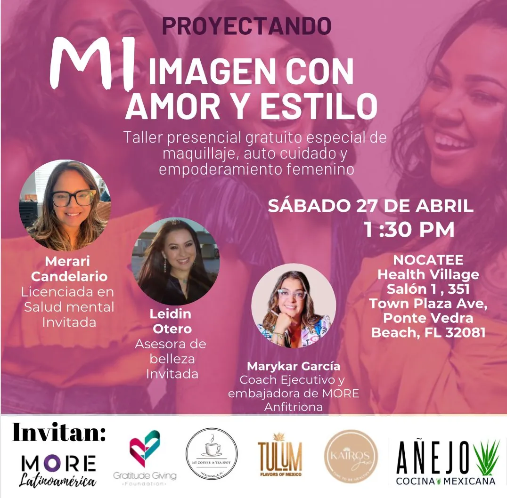
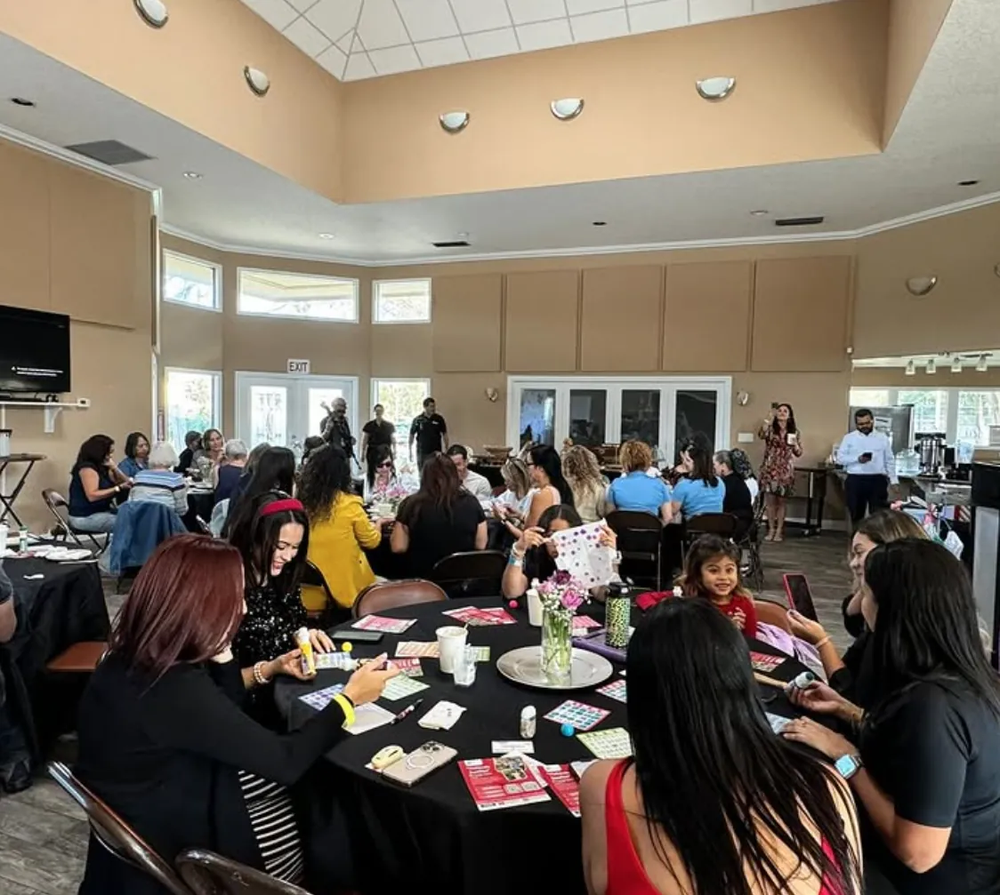
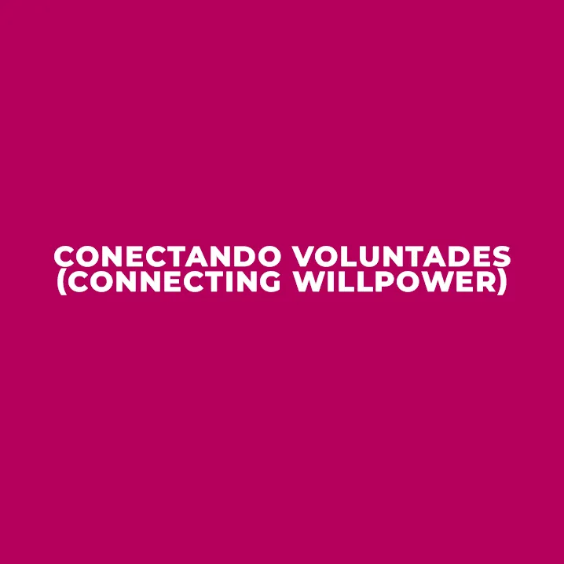
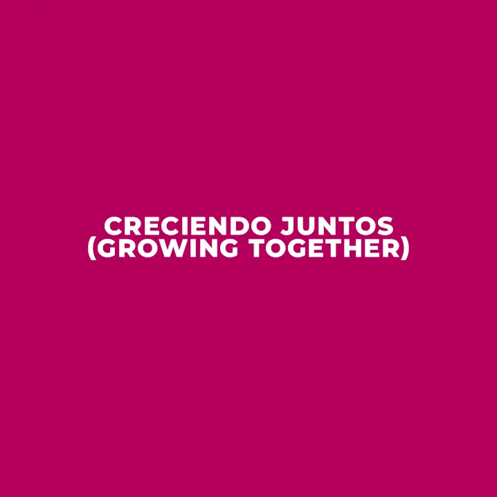
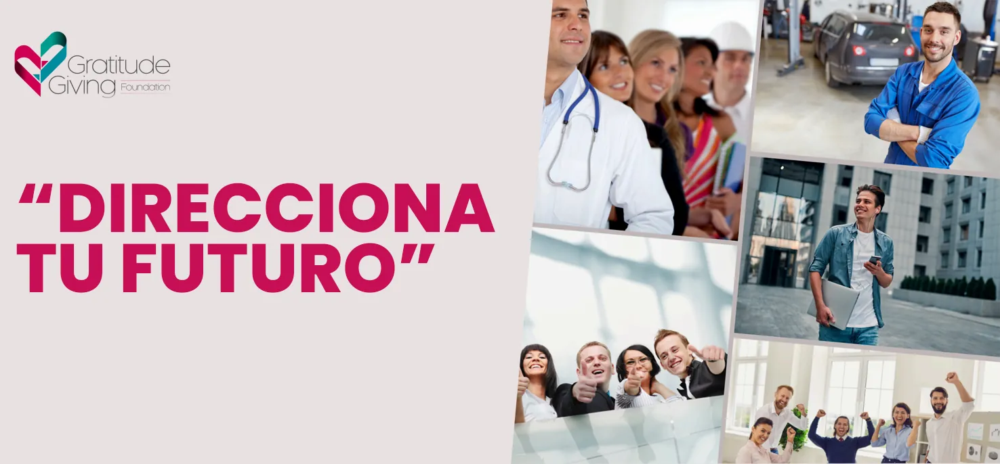

Projects that generate a positive impact on the community
At Gratitude Giving Foundation, we are committed to carrying out projects that transform lives. Currently, we are working on various projects that seek to create a more promising future for everyone.
 Flagship
FlagshipVistiendo Sueños
We bring hope and dignity to vulnerable communities through the monthly delivery of clothing, crafted in partnership with Dress a Girl Around the World. With the support of volunteers and sewing workshops, Vistiendo Sueños reaches foundations across Latin America, connecting hearts and transforming lives with every delivery.

WorkshopsCambiando mentes, iluminando vidas
Workshops and initiatives such as Mi imagen con amor y estilo, Mamis Azules por la concientización del autismo and support for the heroes of Estrellita de Belén.
 Podcast
PodcastVoces que Inspiran (Podcast)
Our podcast showcases individuals and organizations making a positive impact in their communities, with tools and perspectives you can apply to your life.

Annual eventBingo Brunch Bazar
A sold-out event that brought our community together to celebrate our anniversary and raise vital funds for our flagship program, Vistiendo Sueños.
 Contest
ContestConnecting My Mind with the Lens
A photography contest for young people to express their creativity on important topics like mental health, inclusion, and innovation.

WorkshopsConectando Voluntades (Connecting Willpower)
We create spaces where collaboration and learning strengthen communities.

TrainingCreciendo Juntos (Growing Together)
We train today to strengthen tomorrow. Our continuous training program designed to empower foundations to grow and achieve sustainability.
Be part of the change
Become a volunteer, sponsor, or supporter and be part of this movement of gratitude, impact, and transformation. Together, we transform lives, strengthen communities, and multiply hope.

Join us and be part of the change in these young people’s lives!
Help youth find their path with “Direction to Your Future”
- Target audience
Youth aged 16 to 20 seeking their vocation and purpose.
- Challenges they face
Uncertainty about their future leads to academic dropout, health issues, unsatisfying jobs, and limitations in personal and professional growth.
- Our solution
We provide personalized guidance, develop key skills, and offer networking opportunities so that each young person can chart their own path to success and fulfillment.
- Your donation makes a difference
With your support, we can reach more youth and provide them with the tools and inspiration they need to reach their full potential.

Have a project in mind?
We encourage project proposals that align with our mission. If you have a proposal, write to us at contact@gratitudegivingfoundation.org for more information about the process.